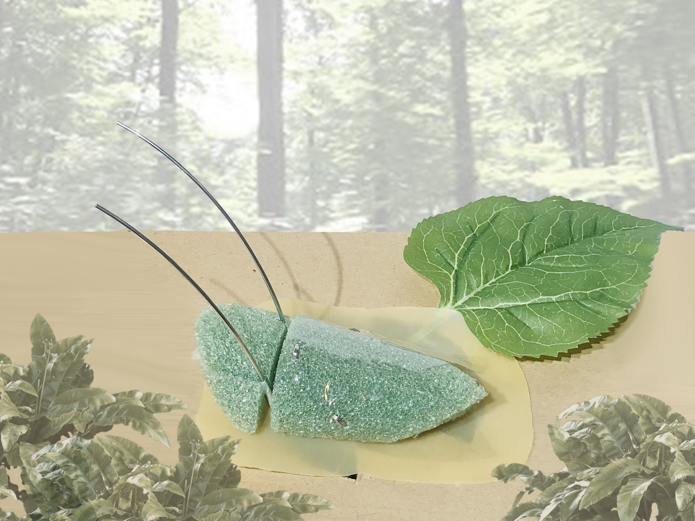
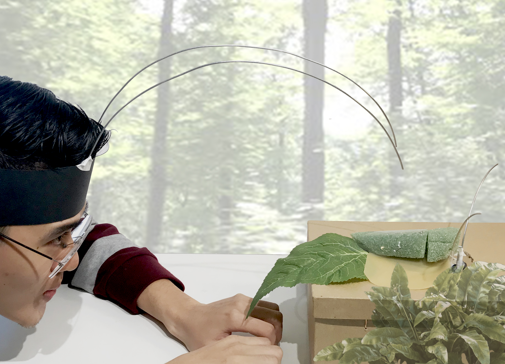

k // a
KAREN EL ASMAR
Week 5
Assignment Brief:
Take reviews into consideration, research further and develop a draft for a functional prototype.
Enrichment II:
Consider form factor, affordances, environmental context and enrichment outcome using this device.
Individual Project
For my next step, I decided to continue with my first proposal: WingMe, the cricket wingbot and continued researching further on:
- Cricket Fights: when and how it happens
- Cricket’s Behavior: before, during and after a fight
Along with my questions from before:
- “What does it mean for a cricket to win or lose a fight?”
- “How do other crickets perceive the result of a fight?“
- “If cricket aggression is so natural and a cricket fight is so popular, is there a specific process, approach or even a specific set of rules in cricket fights?”
Key discoveries that inform my design:
- Fighting is a very systematic, highly stereotyped and easy-to-keep-track-of process:
It involves a series of easily quantifiable acts that all male crickets perform when they fight.
- Antennae play a very important role in fighting:
The antenna of crickets, and other insects, is a complex multimodal sensory organ, equipped with various and numerous mechanoreceptors and olfactory receptors and signals from both types are each thought to be important in controlling decision crickets take. For this, when two crickets meet they first contact each other with their large moveable antennae and this guides the decision to court, fight, or flee.
Steps of a fight:

The fight continues until one of the males surrenders. At this point, a behavioral hierarchy is established between the pair, with the winner initiates the singing of an aggressive song, chasing away the loser.
The Design



Body Storming

Body Storming Video
Reference
Stevenson, Paul A., and Jan Rillich. Releasing Stimuli and Aggression in Crickets: Octopamine ...www.ncbi.nlm.nih.gov/pmc/articles/PMC4404879/.